| 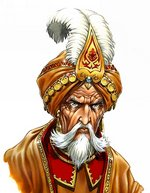 | Cyrus był stworzony do wielkich czynów, od młodych lat okazywał kombinacje naturalnego talentu i intensywnej poukładanej ambicji jaką liderzy (przywódcy) często posiadają. Walcząc bezlitośnie wspiął się na górę, stając się młodym i dynamicznym władcą Pierwszego Kręgu Wtajemniczenia. Mijały lata i geniusz Cyrusa znikał pod wpływem jego wielkiego ego i tendencji do chciwości,Cyrus pozostał jednak Magiem o imponującej mocy. |
|---|
| Jhora | |
|---|---|
| 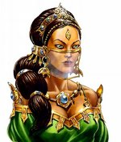 | Siła umysłu JhoryJhora daje jej umiejętność używania swoich magicznych ataków w niezliczonej odległości. Pierwszymi, którzy się o tym przekonali byli bandyci, którzy chcieli urządzić zasadzkę na karawanę w której była (wtedy jeszcze dziecko). Nagły atak "Strzał Eldricha" który spadł na napastników zmusiła ich do wycofania się na wzgórze. |
| Mahir | |
|---|---|
| 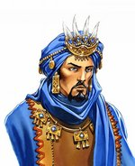 | Maahir nie różnił się od innych magów intensywnością z jaką się uczył, lecz unikalny był sposób w jaki to robił. Sezonowy podróżnik pod żadnym sztandarem, Maahir forsował swoje ciało przez nieskoączone tortury. Wierzył w to, że moc mentalna idzie ręka w rękę z mocą fizyczną. W rezultacie Maahir odzyskuje manę w niezwykle szybkim tempie. |
| Galib | |
|---|---|
| 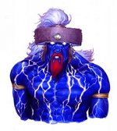 | Galib jest Dżinem, istotą duchową, lordem wśród wielu duchów żywiołów błąkających się po magicznym terenie, niewidocznych dla niewprawnego oka. Galib nie jest służącym, lecz przyjacielem i sojusznikiem magów ze Srebrnych Miast, zasiada jako jeden z Kręgu wśród przywódców gildii Czarodziejów. Wielu z jego ludzkich odpowiedników nauczyło się w sposób przypadkowy odbijać zaklęcia przeciwnika, lecz wrodzone zdolności Galiba pozwalają mu w dużej mierze kontrolować ten efekt i określać, w co odbity czar ma trafić. Wrogowie starają się unikać używania przeciw niemu magii wiedząc, że czar może zostać odbity i ugodzić w ich własne oddziały. |
| Havez | |
|---|---|
| 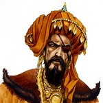 | Havez ma oko na wszystko, co jest dziwne i nietypowe. Jego osobiste wyposażenie to niezwykła mieszanina przedmiotów z całego Ashan - ubraą z jedwabiu cienia z Ygg-Chall, skórzanych wyrobów z Irollan, klejnotów z krasnoludzkich kopalą itp. Jego zainteresowanie rzeczami nietypowymi rozciąga się także na jednostki wojskowe. Przez wiele dekad studiował zachowania Gremlinów i wyspecjalizował się w trenowaniu i prowadzeniu do boju tych jaszczurowatych humanoidów. |
| Narxes | |
|---|---|
| 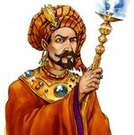 | Narxes jest wiernym wyznawcą poglądu, że sukces jest wypadkową precyzji, dokładności i dbałości o detale. Będąc surowym i pedantycznym nauczycielem jest również prawdziwym tyranem dla akolitów chcących zostać Magami. Nie żałują oni jednak godzin spędzonych pod jego bezlitosnym okiem, ponieważ dzięki niemu rozumieją, że im więcej uczysz się w czasach pokoju, tym mniej cierpisz w czasie wojny. |
| Nathir | |
|---|---|
| 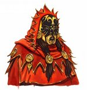 | Podczas Wojny Szarego Sojuszu Nathir został wzięty do niewoli przez demony. Uwięziony w ich kopalniach siarki, jest jedną z zaledwie trzech osób, które przetrwały rewoltę w kopalni i uciekły. Nathir przedarł się przez ogniste pustkowia krainy Sheogh i dotarł w koącu do Srebrnych Miast, przysięgając, że od tej pory ogieą zawsze będzie jego sługą, a nigdy więcej panem. |
| Nur | |
|---|---|
| 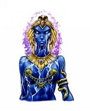 | Nur jest jedną z istot, które nie tylko są odporne na magię, ale też same są z natury magiczne. Będąc mistrzynią medytacji i koncentracji umysłowej należącej do klasy Dżinów, Nur walczyła przy pomocy magii Chaosu w wielu światach i nabyła niezwykłej odporności magicznej. W wyniku swoich badaą, praktyk i przygotowaą, Nur jest w stanie ciągle i na bieżąco uzupełniać zapasy swoich punktów many. |
| Razzak | |
|---|---|
| 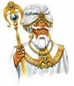 | Mądrość nie zawsze przychodzi z wiekiem. Po wielu dekadach nauki Razzak zdobył się na eksperyment, który pozwoliłby mu na łatwe korzystanie z magii Ashan na wieki. Miał szczęście, że przeżył i obecnie musi być noszony przez niewolników przez wzgląd na swój częściowy paraliż. Eksperyment ten miał jednak i swoje dobre strony, ponieważ Razzak zajął się tworzeniem Golemów, które pomagają mu i zastępują w pewnym stopniu niesprawne kończyny. |
| Zehir | |
|---|---|
| 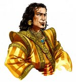 | Pobudliwy, uparty i energiczny - w taki sposób starsi magowie opisują Zehira. Zdecydował się specjalizować w magii żywiołów twierdząc (i słusznie), że jeśli będzie w stanie kontrolować siły tak potężne jak żywioły, to da sobie radę również z każdą inną formą magii. Choć tytuł Pierwszego Maga Kręgu został przyznany temu młodzieącowi by ukrócić walki wewnętrzne, to pozostali magowie Kręgu szybko się zorientowali, że Zehir już niebawem przewyższy ich pod względem umiejętności, i że stanie się to raczej za kilka miesięcy, niż za kilka lat. |
| Faiz | |
|---|---|
| 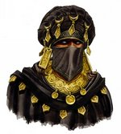 | Faiz znany jest w Srebrnych Miastach głównie ze względu na swoją paskudną facjatę, którą zazwyczaj chowa pod chustą. Jego szramy są wynikiem starcia z Pustynnymi Orkami. Od dnia tej potyczki zaprzątnięty dotąd przyjemnymi sprawami Mag stał się fanem niszczenia i rujnowania. Po przejściu stosownego treningu, Faiz stał się mistrzem siania destrukcji przy pomocy magii. |
| Zoltan | |
|---|---|
| 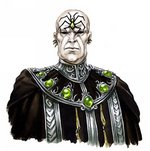 | Zoltan jest jednym z wielu dowódców nieumarłych, którzy postrzegają magów jako prawdziwych wrogów. Aby lepiej ich poznać, Zoltan dogłębnie studiował tajniki magii w Srebrnych Miastach. W wyniku tych doświadczeą jest w stanie połączyć czary nekromanckie z magią, by uzyskać ciekawy efekt: gdy jakiś czar zostanie raz użyty, traci moc i nie może być wykorzystywany ponownie, póki Zoltan jest w pobliżu. |
| Markal | |
|---|---|
| 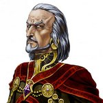 | Zagorzały uczeń pochłaniający wiedzę, jaką oferuje nekromancja, Markal wzniósł się na nieosiągalne dla innych żyjących wyżyny sztuki wskrzeszania. Niegdyś nadworny astrolog i ulubiony doradca królowej Fiony z Imperium Gryfów, Markal zorganizował potężną (lecz tajną) bazę wypadową kultystów na terenach Świętego Imperium. Przywódcy religijni Kościoła Światła zaniepokoili się jednak szybko jego działalnością i stali się podejrzliwi. Gdy królowa Fiona zmarła, jej protegowanego wygnano w odległe zakątki Imperium. Zorientowawszy się, że po otrzymaniu Pocałunku Pajęczej Bogini nie może już swobodnie przemieszczać się po krainach ludzi, Markal zdecydował się szerzyć ideologię Heresha poprzez środki dyplomatyczne oraz, rzecz jasna, bezpośredniego przymusu. |
| Raven | |
|---|---|
| 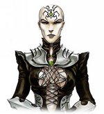 | Przeżywszy wojny, które rozdzieliły drogi nekromantów i magów ze Srebrnych Miast (kiedyś te klasy były dla siebie braćmi), Raven widziała na własne oczy spustoszenie, jakie magia może poczynić w szeregach nieumarłych. Poświęciła się więc badaniom nad sposobami osłabiania mocy wrogich magów. Raven potrafi sprawić, że ich ataki są słabsze, a czas trwania czarów krótszy.. |
| Kaspar | |
|---|---|
| 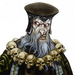 | Kaspar był znanym lekarzem i uzdrowicielem, mogącym leczyć nawet najbardziej straszliwe rany. Wnikając coraz głębiej i głębiej w sekrety życia i śmierci, Kaspar przeprowadził szczególnie ryzykowny eksperyment, który niestety wymknął się spod kontroli... i spowodował, że sam Kaspar przeniósł się do królestwa umarłych. Mimo iż w tej chwili dowodzi armią nieumarłych, jego wiedza z dziedziny anatomii i leczenia ran nadal pozostaje niedościgniona. |
| Naadir | |
|---|---|
| 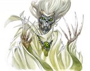 | Naadir gardzi cielesnością bardziej niż inni nekromanci. Dla niego doskonałość może objawić się tylko w obnażonej duszy, odartej ze wszystkich cielesnych nieczystości. Na polu walki jego niezwykła znajomość świata duchowego pozwala mu na "łapanie" dusz przeciwników i używanie ich w roli posiłków dla własnych oddziałów. |
| Deirdre | |
|---|---|
| 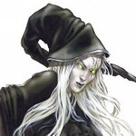 | Deirdre była nadgorliwym Inkwizytorem w Kościele Światła Imperium Gryfów. Spędziła wiele lat ścigając kultystów demonów w Wolnych Miastach na wschodnich rubieżach Imperium, często "oczyszczając" je zarówno z kultystów, jak i niewinnych ludzi. Przez jej moralne niepokoje, w krainach tych zaczęła szerzyć się korupcja, aż w końcu Deirdre wpadła w ręce nieprzyjaciół, którzy torturami zamęczyli ją na śmierć. Jej niespokojna dusza schwytana została przez nekromantów, którzy bardzo zazdrościli jej umiejętności wyciągania informacji z ludzi. Tak Deirdre dołączyła do ich własnej krucjaty. Można chyba śmiało rzec, że żadna istota, żywa czy nieumarła, nie wie o krzykach więcej od Deirdre. |
| Vladimir | |
|---|---|
| 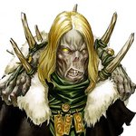 | Vladimir twierdzi, że poza nielicznymi wyjątkami, oddziały nieumarłych zawsze zostaną przechytrzone lub wymanewrowane przez armię żywych. W związku z tym woli atakować dużymi siłami, nie bawiąc się w planowanie czy skomplikowaną taktykę. Jego specjalnością jest wskrzeszanie hord bezmyślnych nieumarłych, którzy są w stanie zalać wroga i zmiażdżyć go samą przewagą liczbową. |
| Orson | |
|---|---|
| 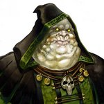 | Pozbawiony przez naturę charyzmy i autorytetu, Orson szybko odkrył, że nie potrafi dowodzić jednostkami, które wykazują się niezależnością myślenia. Aby uniknąć sytuacji, w której jego rozkazy byłyby kwestionowane lub ignorowane, Orson spędził lata na doskonaleniu sposobu tworzenia oddziałów zombie. "Wszystko, co powyżej szyi, jest zbędne", zwykł mawiać ten nieumarły generał. |
| Lukrecja | |
|---|---|
| 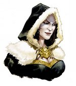 | Uwiedziona i przekonana do nekromanckich ideałów przez samego Sandro, ta była księżniczka wykazała się żądzą krwi i władzy. Jeszcze za życia Lukrecja była utalentowaną kurtyzaną, lecz dopiero długowieczność wampira pozwoliła jej doprowadzić do perfekcji sztukę uwodzenia, wbijania noża w plecy i politykowania. Talenty te wyniosły ją do rangi Księżniczki Nieumarłych. Lukrecja jest duchową i (nie)moralną przywódczynią wampirów, z których każdy marzy o powtórzeniu jej ekscesów.. |
| Arantir | |
|---|---|
| 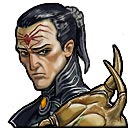 | Lordowie Heresh są zimni, ponurzy i z fanatyzmem oddają cześć pajęczemu aspektowi Ashy. Starają się wspiąć na najwyższe szczyty nie za pomocą swoich umiejętności, a dzięki swojej ślepej wierze w pajęczą bogini. Arantir jako najpotężniejszy nekromanta stał się potęgą wśród nieumarłych, jak i żywych. Jednak pomimo jego głębokiej czci i oddaniu woli Ashy, Arantir jest straszliwym dowódcą. |
| Giovanni | |
|---|---|
| 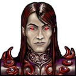 | Giovanni był tylko pomniejszym lordem Księstwa Byka, ale też nie mógł liczyć na wyższą rangę ze strony wyżej stojących. Zmienił swój byt idąc w ślady swojej siostry Lukrecji i stał się nekromantą. Teraz jako potężny wampirzy lord sprawuje kontrolę nad regionem graniczącym z Imperium Gryfa. |
| Ornella | |
|---|---|
| 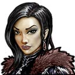 | Jako czarująca i zmysłowa księżna Imperium Gryfa, Ornella dużo swojego czasu spędzała na poznawaniu tajników nekromancji, co zakończyło się błyskawicznym skutkiem. Teraz jako nekromantka, chcąc zdobyć przychylność Arantira musi udowodnić swoją wartość walcząć u boku nieumarłego władcy z demonicznym legionem i przy okazji odkrywać swoje czarnomagiczne umiejętności. |
| Nicolai | |
|---|---|
| 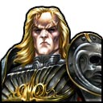 | Na wskutek przywrócenia jego duszy przez Markala, Nicolai stał się wampirem żądnym krwi, zemsty i zniszczenia. |
| Yrbeth | |
|---|---|
| 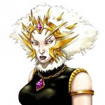 | Yrbeth była dzieckiem obdarzonym niezwykłymi jak na swój wiek zdolnościami koncentracji. Trenując jak wiele jej towarzyszek sztukę magii, Yrbeth nauczyła się w znakomity sposób koncentrować swe moce - co pokazała dobitnie w czasie trzęsienia ziemi. Odkryła, że dzięki temu może zgromadzić więcej magicznej energii, niż jest to normalnie możliwe. Noc poprzedzającą ważną bitwę Yrbeth często spędza czuwając, na medytacjach i przygotowaniach. |
| Lethos | |
|---|---|
| 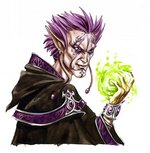 | Lethos uważany jest za cennego sprzymierzeąca głównie ze względu na umiejętność wygrywania bitew, zanim się jeszcze rozpoczną. Pomimo iż służył już przez wiele dziesięcioleci, jego dogłębna znajomość egzotycznych trucizn i chorób nadal nie osłabła. Jednostki przeciwnika zbliżające się do pola bitwy często mogą poczuć efekt zaklęć Lethos, zanim jeszcze rozpocznie się właściwe starcie; zdarzały się przypadki, że mądrzy dowódcy zaczynali bitwę z Lethosem od pospiesznej ucieczki. |
| Eruina | |
|---|---|
| 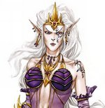 | Eruina jest prawdziwą córką legendarnej królowej Tuidhany. Eruina raczej nie akcentuje swego królewskiego pochodzenia, woląc, by osądzano ją po czynach i imponujących umiejętnościach. Wiedźmy Cienia i Matrony Cienia w jej armii zdają sobie jednak sprawę z czystości krwi Eruiny i wspierają jej ataki z zaciekłością godną fanatyków |
| Sorgal | |
|---|---|
| 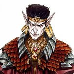 | Sukcesy Sorgala związane z hodowlą wojennych jaszczurów mrocznych elfów nie wynikają z łagodnego usposobienia czy empatii, lecz z bezlitosnego odstrzeliwania słabych osobników i morderczego treningu, który może wyniszczyć nawet najsilniejsze sztuki. Gdy idą do walki, jaszczury te są zdesperowane i na wpół żywe z głodu; dzięki temu w starciu kąsają przeciwnika jeszcze bardziej zajadle. |
| Sinitar | |
|---|---|
| 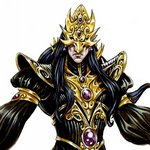 | Czarnoksiężnicy z Ygg-Chall są mrocznymi osobnikami rzadko wychodzącymi z cienia, zaś Sinitar wyróżnia się nawet spośród tej osobliwej grupy. Nie tylko potrafi wzmacniać czary, robi to w dodatku zużywając mniej energii niż inni. Nikt nie wie dokładnie, w jaki sposób posiadł tę umiejętność, lecz szramy na jego twarzy świadczą o zatargach ze Smokami Cienia - zatargach, które pozostawiły głębokie ślady zarówno na ciele, jak i na duszy. |
| Shadya | |
|---|---|
| 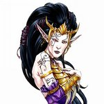 | Rodzina Shadyi została zabita w trakcie wojen o sukcesję w klanie Blizny Duszy. Przy życiu pozostała tylko ona jedna i od tego czasu, czyli od wczesnego dzieciąstwa, wszystkie jej myśli krążą wokół zemsty. Poświęciła wiele lat na różnorakie treningi, często znikając na długie miesiące i pojawiając się na nowo tylko po to, by wykreślić kolejnego wroga ze swojej listy. Mierząc się samotnie z setkami wrogów, Shadya wie wszystko co można na temat infiltracji, uników, ucieczki i subtelności. |
| Kythra | |
|---|---|
| 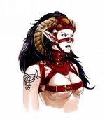 | Kythra jest jedną z najbogatszych kobiet w Ygg-Chall. Źródło jej dochodu nie jest tajemnicą: czerpie zyski z handlu zniewolonymi Minotaurami, czym jej rodzina zajmowała się od pokoleą. Niewolnicy ci stanowią też trzon jej wspaniałej armii; kandydaci na wojowników muszą jednak najpierw ukoączyć krwawą, wielu z nich przynoszącą śmierć, szkołę dla gladiatorów. |
| Vayshan | |
|---|---|
| 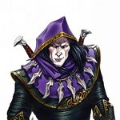 | Vayshan znany jest ze swoich śmiałych wypadów do Irollan, gdzie uwielbia polować na swoich sylvaąskich kuzynów (traktuje to jak świetny sport). Nieznane są powody tak zaciekłej nienawiści Vayshana do elfów, lecz jego oddziały podzielają tę obsesję. Uczestnictwo w posępnym polowaniu w lasach Irollan jest wielkim zaszczytem dla wszystkich mrocznych zwiadowców i zabójców, którzy prześcigają się w próbach udowodnienia dowódcy swojej przydatności i zdobycia jego łask. |
| Yrwanna | |
|---|---|
| 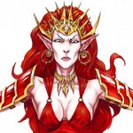 | Gdziekolwiek pojawia się Yrwanna, wszędzie towarzyszy jej chmara adoratorów podziwiających jej piękno. Za zniewalającym obliczem kryje się jednak biegły umysł, a Yrwanna dobrze wie, jak wykorzystać swoje atuty, by osiągnąć cel. Lojalności jej oddziałów nie zmniejsza nawet fakt, że wielokrotnie zdarzało jej się poświęcać setki żołnierzy, byle tylko zwyciężyć. |
| Raelag | |
|---|---|
| 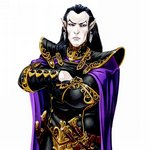 | Nic nie wiadomo o przeszłości Raelaga, który choć bezpośredni i bezlitosny w walce, to swoje plany i taktykę trzyma w tajemnicy na równi z życiorysem. Ponieważ często przewiduje ruchy przeciwnika, potrafi go otoczyć i wykiwać, nikt zbytnio nie pali się, by stawić mu czoła na polu walki. W starciu z tym przebiegłym i zatrważającym wojownikiem nieprzyjaciele często muszą zmieniać pieczołowicie przygotowane plany. |
| Ylaya | |
|---|---|
| 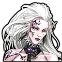 | Ylaya jest strażniczką strzeżącą praw i kultu w klanie Piętna Cienia. Jej życie toczyło się wokół licznych nabożeństw i oddawania czci Malassie i jako szanowana matrona jest wierna naukom smoczej bogini. Co prawda Ylayi brakuje militarnego doświadczenia, jednak dzięki pomocy jej mrocznych sióstr i matron wierzy, że da sobie radę jako dowódca. |
| Thralsai | |
|---|---|
| 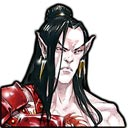 | Niewielu członkom klanu Blizny Duszy udało się uciec po tym, jak Raelag wybił cały ich ród. Jednak wśród tych niedobitków był także Thralsai. Pozostając w ukryciu w czasie wojny królowej Izabeli powoli przygotowywał się do swojego ostatecznego celu - zniszczenia Raelaga i pomszczenia własnego klanu. |
| Agbeth | |
|---|---|
| 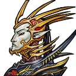 | Agbeth pochodzi z rodu, który w czasie wojen słynął z niezwykłej brutalności i okrucieństwa. Opuszczając ziemie swoich sylvańskich kuzynów został pojmany i od tamtej pory walczy po stronie swoich rodaków przeciwko krasnoludom. Agbeth nie należy do tchórzliwych; co wiecej, wśród swojego ludu zdobył wysoki szacunek i reputację jako zimny i bezlitosny dowódca. |
| Ranleth | |
|---|---|
| 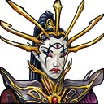 | Odkąd krasnoludy budując swe kopalnie zapuściły się na ziemie Ygg-Chall, odtąd nienawiść pomiędzy nimi a mrocznymi elfami trwa do dziś. Ranleth pochodzi ze starej rodziny, która strzegła tradycji swojego rodu i bezpieczeństwa członków przeciwko krasnoludom. Jednak kiedy rodzina Ranleth zginęła w wojnie z krasnoludzką nacją, Ranleth zaprzysięgła zemstę na każdej rodzinie z Grimheim i ich sprzymierzeńców. |
| Dirael | |
|---|---|
| 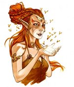 | Osy latające nad głową, krążące szerszenie, pracowite pszczoły - od dziecka Dirael uznawała te drobne istoty za piękne i fascynujące, niczym cenne, bzyczące klejnoty. Była w nich tak zakochana, że została Druidką, by lepiej poznać ich naturę i tajemnice. W koącu odpowiedziała na zew Harmonii i poszła na wojnę, teraz służy Sylannie przywołując hordy swych ulubionych istot, by gnębiły przeciwnika. |
| Vinrael | |
|---|---|
| 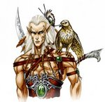 | Vinrael ma dwie cechy, które czynią go cennym dla elfów - jest bardzo uważnym obserwatorem oraz widział więcej bitew, niż jakikolwiek inny sylvaąski wojownik. Bystre oczy jego oraz jego sokołów, latających zawsze w pobliżu, śledzą z zainteresowaniem każdy element terenu, jednostki oraz taktyki. Analizując strategię własną oraz wroga, Vinrael potrafi wiele się nauczyć na podstawie sukcesów i porażek obu stron. |
| Gilraen | |
|---|---|
| 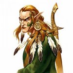 | Ponury i niezwykle wrażliwy w kwestiach dotyczących honoru, Gilraen trenował przez długi czas elficką sztukę szermierki. Stał się znanym mistrzem ostrza i obecnie jest wybitnym nauczycielem sztuki Taąca Wojennego. Jego precyzja, dyscyplina i determinacja udziela się często oddziałom, którymi dowodzi. Nie bez znaczenia jest również trening, który jednostki przechodzą pod czujnym okiem Gilraena. |
| Findan | |
|---|---|
| 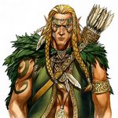 | Biorąc pod uwagę trening i upodobania, jest bardziej poetą i dyplomatą niż wojownikiem. Władając mieczem Findan nie czuje się tak pewnie, jak większość jego braci. Zdecydowanie woli uderzać szybko i mocno, lecz z odległości. Jego ulubioną taktyką jest gnębienie wroga długotrwałym ostrzałem z łuków. |
| Alaron | |
|---|---|
| 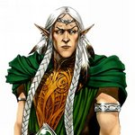 | Wszystkie elfy wielbią ideę Harmonii, Alaron nawet swoich wrogów postrzegał jako niezbędnych i godnych szacunku. I o ile w skali wszechświata może to być całkiem niezła filozofia, to powoduje sporo kłopotów, gdy wódz przebacza i okazuje miłosierdzie wrogom. Na szczęście Alaron, rozumiejąc polityczną konieczność zniszczenia nieprzyjaciół w celu ochrony królestwa, stara się unikać takich decyzji kiedy to tylko możliwe. |
| Ylthin | |
|---|---|
| 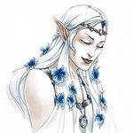 | Pojmana za młodu przez łowców niewolników wywodzących się z mrocznych elfów, Ylthin uniknęła ponurego losu dzięki pomocy Jednorożca. Od tego czasu wielbi te tajemnicze stworzenia zamieszkujące lasy i poświęciła życie na współpracę z nimi. Nikt nie rozumie Jednorożców lepiej niż Ylthin, zaś wiedza ta pozwala jej maksymalnie wykorzystać w walce szybkość i siłę tych istot. |
| Wyngaal | |
|---|---|
| 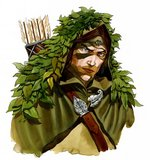 | Wyngaal był zwiadowcą i myśliwym, lecz wściekłość na nieprzyjaciół zakłócających sylvaąską Harmonię uczyniła z niego wojownika. Polega on na wiedzy zdobytej w młodości, zawsze pełen jest pomysłów na nowe zapadnie, pułapki i inne niespodzianki dla wroga. Przeciwnik, który napotka na swej drodze Wyngaala i jego oddziały, raczej nie będzie miał przewagi startowej, ponieważ Wyngaal wykazuje się niezwykłą czujnością pozwalającą mu zawsze mieć coś w zanadrzu. |
| Anwen | |
|---|---|
| 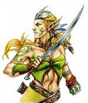 | Anwen broni lasów, flory i fauny z zaangażowaniem godnym podziwu, nawet jak na elfickie standardy. Skazała sama siebie na dobrowolne wygnanie do lasów Irollan - dba o nie jak tylko umie najlepiej i stała się sławna jako ich obroąca. Biada temu, kto zdecyduje się niszczyć las, jego mieszkaąców lub strażników - gdy Anwen idzie na wojnę, bogini Sylanna walczy u jej boku, a jej wściekłość spada na wrogów niczym burza. |
| Talanar | |
|---|---|
| 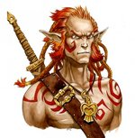 | Talanar był jedynym, który przeżył brutalny atak w Dniu Łez Ognia. Widok setek martwych towarzyszy napełnił młodego wojownika niepohamowaną wściekłością, która do dziś odzywa się za każdym razem, gdy widzi jak giną sojusznicy. Jego chęć zemsty jest tak wielka, że udziela się tym, którzy są w pobliżu; im więcej jego oddział straci ludzi, tym bardziej zajadle walczy. |
| Ossir | |
|---|---|
| 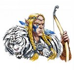 | Ossir to doświadczony i skuteczny myśliwy oraz geniusz łuku; prawdopodobnie jest najlepszym łucznikiem w królestwie. Jego talenty wydały się niezbędne królowi Alaronowi, gdy poszukiwał oficerów do swojej armii, choć Ossir wolałby zapewne pozostać w swoim ukochanym lesie. Wszelkie wątpliwości minęły jednak już po pierwszej bitwie, gdy okazało się, że łucznicy pod dowództwem Ossira sprawiają się o wiele lepiej niż zazwyczaj. |
| Tieru | |
|---|---|
| 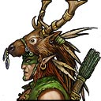 | Poważny druid, który głęboko wierzy w dobro swojego ludu, Tieru jest doceniany za swoją lojalność i oddanie. Mocno wierzy w dobro czynów, ufając Sylannie, że ta ustrzeże go przed wszelkimi pomyłkami. Jak przystało na elfa, Tieru jest mocno przywiązany do natury, dlatego też woli spokojne zacisze wśród leśnych drzew. |
| Freyda | |
|---|---|
| 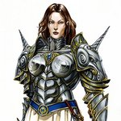 | Uderzaj jak błyskawica, to motto Freydy. Podczas lat spędzonych na studiowaniu w Imperialnej Akademii Strategii często zaskakiwała instruktorów śmiałymi rozwiązaniami opartymi na forsownym marszu, atakach z zaskoczenia i szybkim okrążeniu. W głębi serca Freyda zawsze z niecierpliwością oczekuje kolejnego starcia, by móc wypróbować nowe pomysły i taktyki. Choć niektórzy szeptali, iż otrzymała awans tylko dlatego, że jest córką Godryka, nieprzerwany ciąg błyskotliwych zwycięstw i przykładne dowództwo zamknęły usta nawet najbardziej cynicznym krytykom jej talentów.. |
| Rutger | |
|---|---|
| Rutger znany był głównie jako włóczęga, wolny duch i podróżnik, zanim pobór zmusił go do wstąpienia w szeregi księstwa Wilka, wchodzącego w skład Imperium Gryfów. Korzystając z doświadczeą, które nabył podczas lat swawoli, Rutger wykorzystuje każdą ścieżkę, przejście i skrót, by przyspieszyć tempo przemieszczania się swych oddziałów. Im szybciej wojna się zakoączy, tym szybciej Rutger powróci na szlak, który zdaje się cały czas go wabić. |
| Vittorio | |
|---|---|
| Jako weteran wielu potyczek z niesfornymi Wolnymi Miastami na południowo-wschodniej granicy Imperium Gryfów, Vittorio jest ekspertem w sztuce prowadzenia oblężeą. Spędził lata na udoskonalaniu zarówno projektów, jak i sposobów użycia maszyn oblężniczych, wierząc święcie, że życie wielu żołnierzy można uratować doskonaląc technologię wojskową. Co prawda jego radykalne projekty techniczne mogą przysporzyć ciekawych doznaą u testujących je po raz pierwszy załóg, generalnie przyjmuje się jednak, że jego sprzęt nie nadaje się w zasadzie do niczego. |
| Irna | |
|---|---|
| "Najwcześniejsze wspomnienia Iriny dotyczą Gryfów, gdyż wychowała się w rodzinie cenionych hodowców tych istot. Wyrosła ucząc się mocnych i słabych stron tych bestii, zaś gdy dotarły do niej wieści o wojnie, ochoczo przybyła razem ze swoimi podopiecznymi, by mogli wykazać się tam, gdzie ich najbardziej potrzebowano. Dzięki Irinie Gryfy stają się wyjątkowo zdrowe i łatwe do kontrolowania. |
| Godryk | |
|---|---|
| Godryk jest słusznie przedstawiany jako wzór cnót rycerskich i przykład idealnego wojownika. Wymaga najwyższej odwagi i lojalności zarówno od siebie, jak i podległych mu ludzi. Godryk wzbudza respekt gdziekolwiek się pojawi. Oddziały ufają mu bez zbędnych pytaą, gdyż historia jego czynów oraz łaska, jaką obdarza go Elrath, umacniają wiarę, że sama obecność Godryka na polu walki jest gwarancją zwycięstwa. |
| Izabela | |
|---|---|
| Jedyne dziecko rodziny rządzącej księstwem Greyhound, Izabela została wychowana w izolacji, w otoczeniu niań i służby. Teraz, gdy zaczęła się wojna, młoda królowa czuje się w obowiązku przyjść z pomocą Imperium. Skoncentrowana na tym celu, Izabela wykorzystuje swoje zasoby - bogactwo i szlachetne urodzenie - z poświęceniem i bez zastanowienia. |
| Maeve | |
|---|---|
| Genialna, choć osaczona Maeve to zaangażowana władczyni, która rozpaczliwie stara się wyrwać swoje imperium z równi pochyłej. Starając się zapewnić przyszłość rozbitemu Imperium Sokołów, a równocześnie odpierając inwazję demonów, Meave może polegać tylko na swoim oddaniu ideałom rycerskim i nieugiętej wierze w Smoka Światła. |
| Laszlo | |
|---|---|
| Wywalczył sobie wysoki status, choć jest niskiego urodzenia i ma nieco mroczną przeszłość. Ciężkie próby, z których Laszlo wyszedł zwycięską ręką, umocniły jego charakter i utwardziły serce. Pokryty szramami, srogi i bezlitosny, wdziera się w szeregi wroga jak huragan. "Królowie pola bitwy", jak szumnie nazywa swoją piechotę, nie mają zbytniego wyboru, jak tylko podążać za swym przywódcą, dokonując - często niechcący - aktów niezwykłego męstwa. |
| Ellaine | |
|---|---|
| Ellaine służyła honorowo w królewskiej armii podczas Wojny Zaćmienia, potem zaś powróciła do swej posiadłości, by zarządzać nią w sposób mądry, litościwy i zgodny z przyjętymi prawami. Pomimo dość kiepskiego stanu, w jakim zastała dworek, jej ciężka praca przyniosła owoce: posiadłość rozrosła się i prosperuje. Teraz Ellaine powróciła na wojnę i dowodzi regimentem wieśniaków, którzy wykazują się pod jej dowództwem niezwykłą odwagą, pamiętając jej dobre serce i prawe uczynki z czasów pokoju. |
| Dougal | |
|---|---|
| Choć Dougal jest tak jak jego towarzysze oddany walce ku chwale Imperium Gryfów, to jego lojalność jest podszyta sporą dozą pragmatyzmu. Ponieważ Dougal wierzy, że najlepszy wróg to taki, który jest martwy zanim dotknie żołnierza Gryfa, to od wielu lat specjalizuje się w szkoleniu i wyposażaniu łuczników. Strzelcy podzielają jego przekonania i wierzą, że dopóki on jest ich dowódcą, nic im nie grozi. |
| Klaus | |
|---|---|
| Poddany rygorystycznemu treningowi, lecz pochodzący ze zubożałej szlachty w Imperium Gryfów, Klaus zapewne pozostałby nieznany, gdyby nie łut szczęścia. Rzucony w wir niezwykle wymagającego turnieju na skutek pomyłki w dokumentach, zdobył serce tłumu wysadzając z siodła największych rycerzy Imperium. Od tej pory jest wzorem dla wszystkich konnych jednostek. |
| Duncan | |
|---|---|
| Duncan pochodzi ze starej rodziny, której ziemie i przelana krew nie znajdowały się nigdzie indziej, jak w bajecznej dynastii Sokoła. Jako młodzieniec nie doświadczał luksusów przebywania w królewskich salach i pałacach, lecz na brudnych i zakurzonych drogach, gdzie razem z towarzyszami opowiadali sobie najrozmaitsze legendy. Jako niecierpliwy arystokrata, Duncan poświęcił swoje życie na poznawaniu zakątków świata i smaku przygody. |
| Nicolai | |
|---|---|
| Rycerz, a następnie nekromanta, król Imperium Gryfów, syn i następca Aleksieja oraz Fiony, mąż Izabeli, siostrzeniec Godryka, kuzyn Freydy. Debiutował w intrze do Heroes of Might and Magic V, gdzie miał zawrzec związek małżeński z Izabelą. Ceremonia zaślubin została przerwana przez atak arcydiabłów, które napadły na niego, Nikolaj zdołał jednak je pokonac i wziąc udział w wojnie z demonami. W trakcie jednej z potyczek został zamordowany przez Agraela. Na łożu śmierci wyraził życzenie, by tron po nim objęła Izabela. Pochowano go w mauzoleum wraz z Sercem Gryfa, w którym zaklęto fragment duszy Aleksieja. |
| Agrael | |
|---|---|
| Agrael szybko torował sobie drogę w górę hierarchii kultystów demonów, aż wreszcie został prawą ręką samego Władcy Demonów. Przeciwnicy zarzucają mu brawurę i przerost ambicji, lecz kontrolowana agresywność Agraela sprawiła, że stał się cenionym dowódcą. Atakuje zawsze, gdy nadarza się dobra okazja, nie waha się też podejmować ogromnego ryzyka, jeśli uważa, że nagroda za trudy jest ich warta. |
| Grawl | |
|---|---|
| Gdziekolwiek by się nie ruszył, Grawlowi towarzyszy ujadające stado Piekielnych Ogarów bądź Cerberów. Są to jedyne istoty, na których Grawlowi choć odrobinę zależy i broni ich jak członków rodziny. Niektórzy plotkują nawet, że może faktycznie jest między nimi jakieś pokrewieąstwo. Tak czy inaczej, każdy, kto ośmieli się zaatakować czy wyśmiewać Grawla, koączy rozszarpany ostrymi jak brzytwy kłami jego wiernych bestii. |
| Deleb | |
|---|---|
| Demonica Deleb była wśród generałów Kha-Beletha, którym zlecił przerobienie więzienia tak, by lepiej pasowało do jego potrzeb. Przy okazji tego zadania nabyła sporą wiedzę na temat maszyn. Przezywana przez nieprzychylnych "Maszynką do Mielenia Mięsa", Deleb dużo bardziej ufa tworzonym przez siebie maszynom wojennym, niż niestałym w uczuciach oddziałom demonów, których lojalność zazwyczaj oscyluje pomiędzy panicznym strachem przed dowódcą, a strachem o własne życie. |
| Alastor | |
|---|---|
| Alastor od najmłodszych lat wykazywał talent do kontrolowania umysłów - jego wrogowie z dzieciąstwa często w niewytłumaczalny sposób koączyli w potokach lawy. Uradowany tymi pokazami umiejętności Władca pozwolił Alastorowi studiować tajniki uzyskiwania władzy nad umysłami u najlepszych mistrzów w Sheogh, a potem w krainach Ashan. Wielokrotnie oddziały przeciwnika, zniewolone jego wzrokiem, przechodziły na stronę demonów. |
| Nebiros | |
|---|---|
| Nebiros widział w życiu więcej bitew niż jakakolwiek inna istota z głębin Sheogh. Sukces Nebirosa w większym stopniu jednak jest efektem szczęścia i nieprzewidywalności, niż wielkiej liczby godzin spędzonych na walce. Pobici wrogowie skarżą się często, że po jego stronie stoją siły Chaosu, naginając los do jego potrzeb. Biorąc pod uwagę fakt, że wybił się z nic nieznaczącego niewolnika do pozycji potężnej osobistości w Sheogh, teoria ta wydaje się wielce prawdopodobna. |
| Nymus | |
|---|---|
| Nymus był świadkiem zmasakrowania króla Aleksieja i jego rycerzy podczas Wojny Zaćmienia i doświadczenie to przekonało go, że taktyka przewagi siłowej jest kluczem do zwycięstwa. Spędził wiele czasu na próbach stworzenia Piekielnych Wrót i osiągnął interesujące wyniki: oddziały, które przyzywa, przybywają o wiele szybciej niż zazwyczaj. |
| Jezebeth | |
|---|---|
| Jezebeth jest słusznie dumna z faktu, że talenty kusicielki zagwarantowały jej tak wysokie miejsce w hierarchii demonów. Pokazywana jako błyskotliwy przykład dla wszystkich Sukkubusów chętnych do uwodzenia i mordowania na chwałę Władcy, Jezebeth stanowi dla swoich oddziałów niemal wyrocznię w kwestii umiejętności i zaangażowania |
| Biara | |
|---|---|
| Biara szybko awansowała do armii Władcy Demonów, a to z powodu jej rządzy władzy. Wie jak zjednać sobie innych Demonicznych Lordów na drodze do osiągnięcia własnych celów . Po powrocie do demonicznego świata spowodowanego świętym medalionem Gryfa, zdaje się być zdolna wzywać stamtąd bardziej liczne oddziały niż większość innych demonów".. |
| Orlando | |
|---|---|
| Orlando jest kimś więcej niż tylko zwyczajnym demonem. Kiedy Agrael zdradził Władcę Demonów, a Biara została wysłana do unicestwienia Imperium Gryfa i jego sprzymierzeńców, Orlando był najbardziej zaufanym sługą Kha-Beletha, który go wysłał by wzniecić w Ashan ogólny niepokój i spustoszenie oraz rekrutować sobie pomocników. Jako charyzmatyczny i sadystyczny brutal, Orlando dostąpił zaszczytu znalezienia się na wysokiej pozycji w krainie Sheogh. |
| Kha-Beleth | |
|---|---|
| Jego przeszłość przed objęciem tronu nie jest znana. Za główny cel swojego panowania postawił sobie zniszczenie bariery, która więziła demony w Sheogh, i doprowadzenie do narodzin Mrocznego Mesjasza. Jedyną kobietą zdolną do tego okazała się być Izabela Greyhound. Kha-Beleth przeprowadził inwazję na tereny Imperium Gryfów, aby pojmać Izabelę. Wysłał również Erasiala i Veyera, by zdobyc artefakt Serce Gryfa. Został jednak zdradzony przez swego adiutanta Agraela, usiłującego ochronic życie Izabeli. Razem z arcymagiem Zehirem, łowcą Findanem i rycerzem Godrykiem podjął on próbę oczyszczenia duszy Izabeli z piętna potencjalnej matki Mesjasza. Władca dopiął jednak swego i doprowadził do narodzin Mesjasza o imieniu Sareth, ten jednak, na skutek odziedziczenia wielu cech charakteru po matce, odmówił współpracy z Kha-Belethem. |
| Garuna | |
|---|---|
| W historii orków pojawiali się wojownicy w sposób szczególny zestrojeni z Krwawą Furią odziedziczoną po demonicznych przodkach. Garuna, zrodzona z szamanki, która mimo ciąży brała udział w rytualnym składaniu ofiary, przyszła na świat w środku ceremonii puszczania krwi. Nikogo nie zdziwiło, gdy została potem jednym ze słynnych "Krwiopijców". Ilekroć znika grupa wrogów, Garuna wraz ze swymi żołnierzami staje się trudniejszym agresorem. |
| Gorshak | |
|---|---|
| Orkowie niewielu mają naturalnych przywódców, bo aby zasłużyć sobie wśród nich na szacunek, trzeba popisać się nie tylko inteligencją i odwagą, ale i dzikością. Mangu jest jednak inny - nawet inni wodzowie spoglądają z podziwem na jego wprawę. W czasie wielkiej suszy Roku Pylistych Pól, poprowadził połączone luźnym sojuszem plemiona przez pustynię, ogień i tereny rozwścieczonych bestii. Wojował z krasnoludzkimi renegatami i powodziami. Był wodzem pośród wodzów, a oni walczyli z niezwykłym zapałem, gdy stał na czele. |
| Gotai | |
|---|---|
| Ponura determinacja Gotaia odróżnia młodego, obiecującego wodza od reszty Orków. Chociaż podziela ich uczucie klanowej lojalności, niegdyś był ekstremalnie - niemal irracjonalnie - oddany Quroqowi - wodzowi wojennemu, który adoptował go, gdy rodzice Gotaia zostali zabici przez Yeti. Wraz ze śmiercią Quroqa, Gotai odnajduje swoje miejsce w świecie. Miejsce ważne i wysokie, zważywszy na talenty młodego wodza. |
| Haggash | |
|---|---|
| Sierota znaleziona na stepach w pobliżu Qutugh w czasie Roku Morskiej Grzywy, została przygarnięty i wychowany przez centaury. Teraz dowodzi wojskami centaurów - legionami pół-ludzi, pół-koni - szybszymi, solidniejszymi i bardziej niebezpiecznymi.. |
| Kilghan | |
|---|---|
| Chociaż związki międzyrasowe stanowią temat tabu pośród orków, jakoś udało się ustalić rządzący ród władców goblinów. Są mniejsze od orków, mądrzejsze od goblinów - Kilghan i jego ród zawierają oba najniebezpieczniejsze aspekty obu ludów. Gobliny chętnie za niego walczą, a ci którzy chwytają za broń rzadziej uciekają z pola bitwy.td> |
| Kragh | |
|---|---|
| Przyrównywano go do "suchej błyskawicy" - gromu, który pojawia się znikąd, gdy niebo jest jasne. Po raz pierwszy otrzymał to imię, gdy w czasie pojedynku jego wroga wyrzuciło bez broni poza krąg, nim Kragh zdążył wykrzyczeć słowa swego rytualnego wyzwania. Jest silny i agresywny nawet wedle orczej miary, ale jego szybkość i chęć działania powodują, że rusza do ataku zanim jego żołnierze zdołają się przygotować. |
| Kujin | |
|---|---|
| Kujin jest szamanką, orkijską mistyczką, której wiedza o ścieżkach Matki Ziemi i Ojca Niebo dają jej dostęp do potężnych wizji i magii. Poza tym umiejętności dyplomatyczne i naturalna inteligencja uczyniły Kujin cieszącą się szacunkiem przywódczynię. Taktowna, mądra, wykształcona - Orkowie twierdzą, że jej jedyną wadą jest brak poczucia humoru... |
| Kuynak | |
|---|---|
| Kunyak - dziecko stworzonej rasy - ma już dość przerażających warunków, w których przyszło żyć jego ludowi. Traktowani jak niewolnicy Orkowie, których nie uważa się za bardziej ludzkich niż Golemy Czarodziejów, dłużej już nie mogą znieść takiego stanu rzeczy. Kunyak marzy o czyms innym - o miejscu, w którym Orkowie mogliby żyć z pracy własnych rąk i być wolnym ludem. Uważa, że jedyną nadzieją dla Orków jest uczynienie tego snu rzeczywistością. |
| Quroq | |
|---|---|
| Quroq, władca wykorzystywanego bezlitośnie ludu, nie cofa się przed użyciem siły, przebiegłości czy okrucieństwa aby przeprowadzić swój plan. Jest to dla niego prosta kwestia efektywności. Żaden czyn nie jest dla niego nieakceptowalny, o ile prowadzi do zrealizowania jego wizji orczej przyszłości. Jest przekonany, że inne rasy i ludy zawsze szukały sposobów na to by wykorzystywać i prześladować plemiona Orków, a nieobca jest mu idea ataku jako najlepszej obrony. |
| Shak'Karukat | |
|---|---|
| Choć z zasady zachęca się orkijskie dzieci by były odważne i dzikie, Shak'Karukat i tak był wyjątkiem. Już jako nastolatek nie pozwalał się kontrolować, a jego plemię obawiało się, że będzie musiał zostać wygnany. Uratowało go przypadkowe spotkanie z handlarzem wiwern. Zadziwiony potęgą i okrucieństwem tych bestii, skoncentrował swoje wysiłki na nauczeniu się władania nimi i uczynieniu ich jeszcze silniejszymi. Orkowie nie wiedzą, czy bestie kierują się miłością, czy też strachem, ale widać, iż w boju wytrzymują dłużej niż inne. |
| Telsek | |
|---|---|
| Wojownicy orków unoszą głowy, a w ich oczach płonie ogień, ilekroć słyszą to imię. Wychowanek dumnej rodziny wojowników, który zabił pierwszego wilka w wieku sześciu lat. Pod jego dowództwem zniszczono silnie uzbrojone karawany handlarzy niewolników z Wolnych Miast. Rozpięte przy głównym trakcie ciała miały być ostrzeżeniem. To czempion zwykłych orków, jego żołnierze próbują nawzajem prześcignąć się w boju by tylko usłyszeć od tej żywej legendy słowo pochwały. |
| Urghat | |
|---|---|
| Nazywano ją zarówno "Niewidzialną" jak i "Niezłomną". Jest myśliwym od najmłodszych lat, a jej umiejętności tropienia i przemierzania terenu gwarantowały, że jej klan nigdy nie będzie cierpiał głodu. W czasie strasznych mrozów Roku Długiego Mrozu, nie tylko zabiła wielu Yeti, którzy próbowali zakradać się do obozów w poszukiwaniu pożywienia, ale jednego z nich wytropiła, idąc jego śladem przez sześć dni by odnaleźć jego sforę. Następny tydzień spędziła zabijając wszystkie trzydzieści siedem osobników. Przyzwyczajona do szybkich i dalekich podróży po każdym terenie Urghat zawsze szybciej doprowadza swoich żołnierzy do celu. |
| Elba | |
|---|---|
| W poczet największych bohaterek ludu krasnoludów niewątpliwie zalicza się mała,bezwzględna Elba, wychowana przez rodzinę niedźwiedzi. Gdy po raz pierwszy pojawiła się wśród swego ludu, mało kto zauważył, że w żyłach tego małego, szalonego kłębka płynie krasnoludzka krew. Lecz Elba szybko zdobyła sobie szacunek i uznanie, nawet wśród surowych wojowników z północy, Jeźdźców Niedźwiedzi. |
| Brand | |
|---|---|
| Arkath, Smok Ognia, szczególnie upodobał sobie ponurego, stroniącego od towarzystwa. Czarnoksiężnika Branda, który ukrywa zawsze swą twarz za kawałkiem czerwonej tkaniny. Pogłoski mówią, że Brand popełnił błąd podczas eksperymentów z runami i okrutnie poparzył sobie twarz. Wypadek ów wcale go jednak nie zniechęcił. To właśnie za ową wytrwałość i oddanie Arkath obdarzył go ponadnaturalnymi zdolnościami z zakresu magii runicznej. |
| Erling | |
|---|---|
| Trolinga, oswojona biała sowa drzemiąca spokojnie na ramieniu Erlinga, była z nim, gdy powrócił z niezwykle długiej, zimowej wyprawy. Wszelkie pytania na ten temat zbywa on tajemniczym uśmiechem. Z wyprawy owej Erling powrócił nie tylko z sową, ale i z dogłębną znajomością krasnoludzkiej magii runicznej. Niejeden krasnolud zastanawia się, gdzie właściwie Erling udał się owej zimy i z kim się spotkał. |
| Helmar | |
|---|---|
| Helmar rozpoczął swą karierę wojskową jako Kapłan Runów, wyróżniając się pośród swych braci wyjątkową surowością, ascetyzmem i fanatyczną wprost nienawiścią do wroga. Przełożeni Helmara szybko poczęli powierzać mu dowodzenie nad coraz to większymi oddziałami. Helmar wkrótce opanował sztukę zarażania wojowników swą zaciekłością i dziś oddziały jego słyną jako zażarte i bezlitosne w walce.td> |
| Inga | |
|---|---|
| Jako dziecko słynnych kamieniarzy Inga sprawiła swym rodzicom niejaki zawód. Zamiast obrabiać skały, twierdziła, że słyszy ich głos. Spędzała coraz więcej czasu z Kapłanami Runów, studiując tajemnicze pieśni zasłyszane w kamieniu, aż wreszcie przyłączyła się do nich, opuszczając swą nierozumiejącą niczego rodzinę. Dzięki swej wrażliwości na tajemne szepty Arkatha stała się wybitną przywódczynią Kapłanów Runów. |
| Ingvar | |
|---|---|
| Podczas Wojny Pod Górą powierzono Ingvarowi zadanie strzeżenia przełęczy Frostclef. Z trzystu krasnoludów przeżyła ledwo garstka, w czym większość pochodziła z oddziału Ingvara. Od tej pory jest on znany jako jeden z największych dowódców Kamiennych Auli, a prości wojownicy - Obrońcy - są jego niezachwianymi sojusznikami we wszystkich bitwach. |
| Karli | |
|---|---|
| Karli wiele lat spędził w podziemnych kuźniach, studiując prastare receptury i eksperymentując z rozmaitymi stopami i składnikami, by wykuć z nich jak najznakomitszą broń. Wojownicy jego dysponują w konsekwencji niezrównanym wyposażeniem, dającym im znaczną przewagę na polu bitwy. |
| Król Tolghar | |
|---|---|
| Choć dobrego serca, Tolghar żyje w ciągłym strachu: strachu, że nie jest wystarczająco dobry dla swego ludu, że podejmuje złe decyzje, że otaczający jego krainę chaos wreszcie go dosięgnie. Manipulują nim bez trudności doradcy i krewniacy, którzy na lękach jego grać potrafią, jak na "bhak-zad" - krasnoludzkich organach, które przy pomocy gorącego powietrza z ujść lawy wydają z siebie basowe nuty rozbrzmiewające echem w jaskiniach. |
| Rolf | |
|---|---|
| Rolf równie dobrze czuje się w dworskich komnatach, jak i w siodle. Jest zręcznym dworzaninem i zdolnym, czy też nawet wybitnym wojownikiem. Jest ważnym członkiem klanu i przebiegłym politykiem, nie pozwalającym, by cokolwiek stanęło na drodze jego politycznej karierze. Mówiąc wprost, Rolf chce zostać królem. Aby to osiągnąć, udowodnić musi swą wartość wszystkim sześciu klanom, które obiorą następcę Tolghara. W związku z tym zadowoleniem napawa go nieobecność jego niebezpiecznie zdolnego brata przyrodniego Wulfstana, który mógłby pokrzyżować mu plany. |
| Svea | |
|---|---|
| Svea spędziła swą młodość w miastach Srebrnej Ligi jako członkini małej ambasady krasnoludzkiej na ziemiach Czarodziejów. Lecz podczas gdy inne krasnoludy nękała w owej obcej krainie tęsknota za domem, Svea cały swój czas poświęcała poznawaniu tajników magicznych sztuk Ligi. Studia te przyniosły jej niezwykłą wśród krasnoludów biegłość w posługiwaniu się magią błyskawic. |
| Wulfstan | |
|---|---|
| Wulfstan należy do krasnoludzkiego klanu Zimowej Wichury; jest silny i zahartowany w ekstremalnych warunkach krasnoludzkich gór (niewielu krasnoludów opuszcza swe odziemne miasta). Jego podróże po świecie usposobiły go przyjaźnie do innych ras, przez co konserwatyści twierdzą, iż jest on nieczysty. Wprawiwszy kilkakroć króla w zakłopotanie swym bezpośrednim językiem i mało dyplomatycznymi osądami, został w gruncie rzeczy wygnany na granicę, gdzie jest teraz przywódcą ważnego garnizonu. |